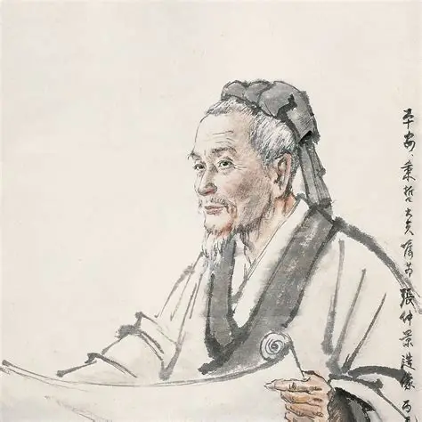
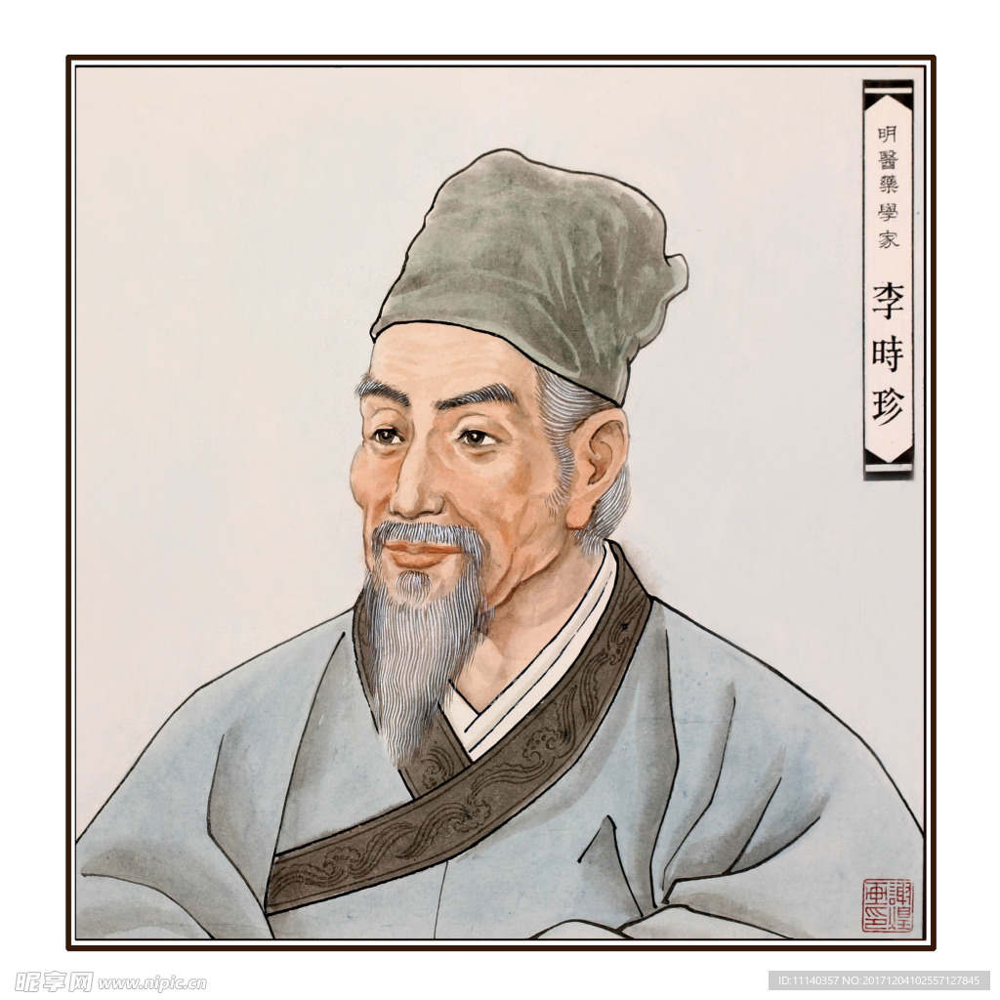
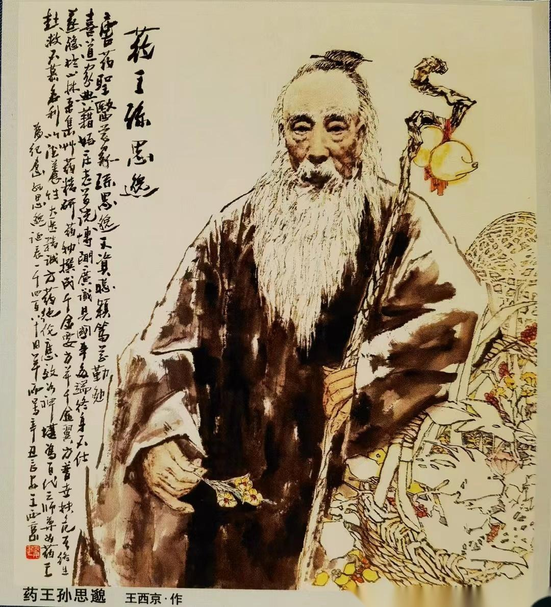
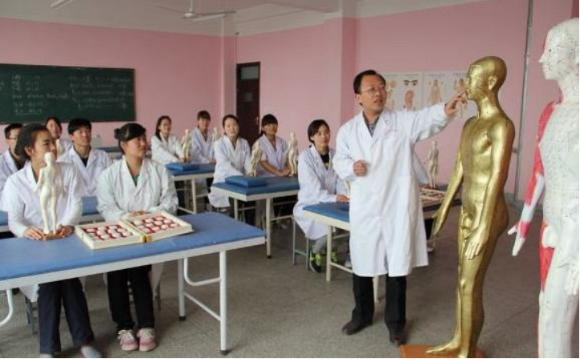

中医传承历史
中医传承历史悠久，核心脉络是“起源奠基—发展完善—融合创新”的演进过程。
起源与奠基（先秦至秦汉）先秦时期为萌芽阶段，古人通过劳动实践积累药性、针灸等原始经验，《诗经》《山海经》记载大量药用动植物秦汉时期形成理论体系，《黄帝内经》确立阴阳五行、经络学说等核心理论，《神农本草经》是首部药物学专著，《伤寒杂病论》奠定辨证论治基础。
发展与完善（魏晋至明清）魏晋至隋唐是充实阶段，陶弘景《本草经集注》规范药物分类，孙思邈《千金方》拓展临床诊疗范围，朝廷设太医署推动官方传承。宋金元时期出现学术争鸣，形成“金元四大家”（刘完素、张从正、李杲、朱震亨），各自阐发不同诊疗思路，丰富中医理论。明清时期达至成熟，李时珍《本草纲目》系统整理药物学知识，叶天士、吴鞠通等创立温病学派，完善外感热病诊疗体系。
近现代融合与传承（清末至今）清末至民国，中医面临西医冲击，通过整理古籍、创办中医学校坚守传承，同时开始尝试中西医结合探索。
当代通过政策支持（如设立中医医院、中医院校）、非遗保护（针灸、中药炮制等入选非遗）、现代科技赋能（中药提取、经络可视化研究），实现传统与现代的融合发展。
历史下留下的医学著作，至今仍是中医学习和研究的重要参考。
历代名医

张仲景
医圣，《伤寒杂病论》作者

李时珍
药圣，《本草纲目》作者

孙思邈
药王，《千金要方》作者
传承发展
现代传承
在现代社会，中医药的传承既要保持传统精华，又要与时俱进。通过标准化、规范化、科学化的方式，使中医药更好地服务于人类健康。
